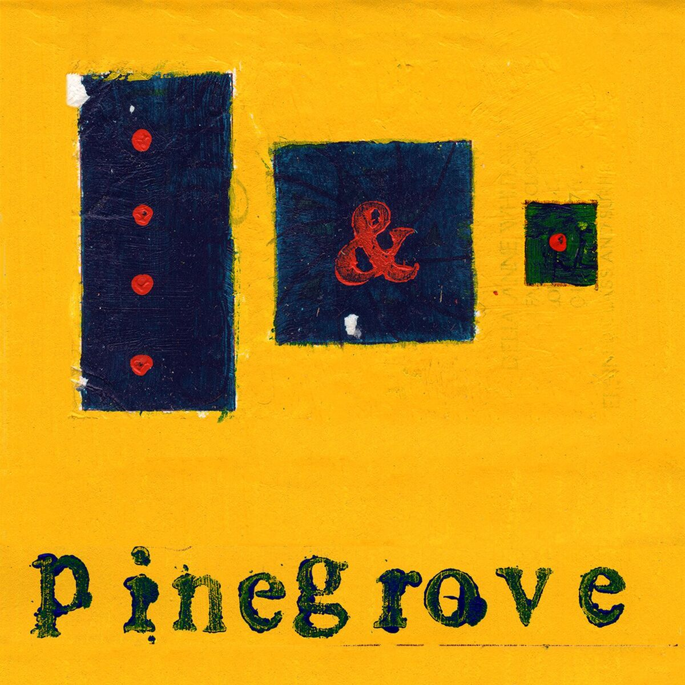

I’d love to share with you the various types of media that I enjoy.
This includes everything from my favourite songs and books I've
enjoyed reading to interesting websites I've come across online.
In case this ever becomes a big list of media reviews and
recommendations.
Try to use CTRL+F to see if the game you're
searching for is in the list or use the Table-of-Contents on the
side of the website!
This page does not include game reviews, but you're welcome to
visit the game reviews page.
Pinegrove - Need 2
Rating: ★★★★★ (5/5)
Links:
Spotify
|
YouTube
|
Bandcamp
|
Soundcloud
Tags: folk rock, indie rock, alternative, country, ...
Pinegrove as a band has the remarkable ability to stir emotions
within me that other artists simply can't. Their music strikes a
perfect balance between looking towards the future, while holding
onto a nostalgic past. Need 2 is what got me into listening to
Pinegrove. The lyrics (only 10 lines!) paired with the charming
atmosphere of the song, is able to strike a chord every single time.
It really manages to capture the "raw human experience".
No matter how often I come back to this song, it always gives me
that same comforting feeling.

Pinegrove - Rose
Rating: ★★★★★ (5/5)
Links:
Soundcloud
Tags: indie rock, americana, experimental, ...
Yes, here’s another song by Pinegrove. I just discovered it
yesterday while exploring some material for my previous review. This
time, the track dates back to 2012!
This song captures a similar feeling as "Need 2" does,
although it isn't as well-known. I especially love the soothing
harmony towards the end, around "No we won't leave this
town". It manages to evoke such a nostalgic feeling only
Pinegrove is able to create. The exact feeling is quite
indescribable. With that being said, I would rate this song a 5/5,
without a doubt. I truly wish I could listen to it again for the
first time

Sharecode:
https://myrdin.cx/blogs/mediareqs
[home]
[index]